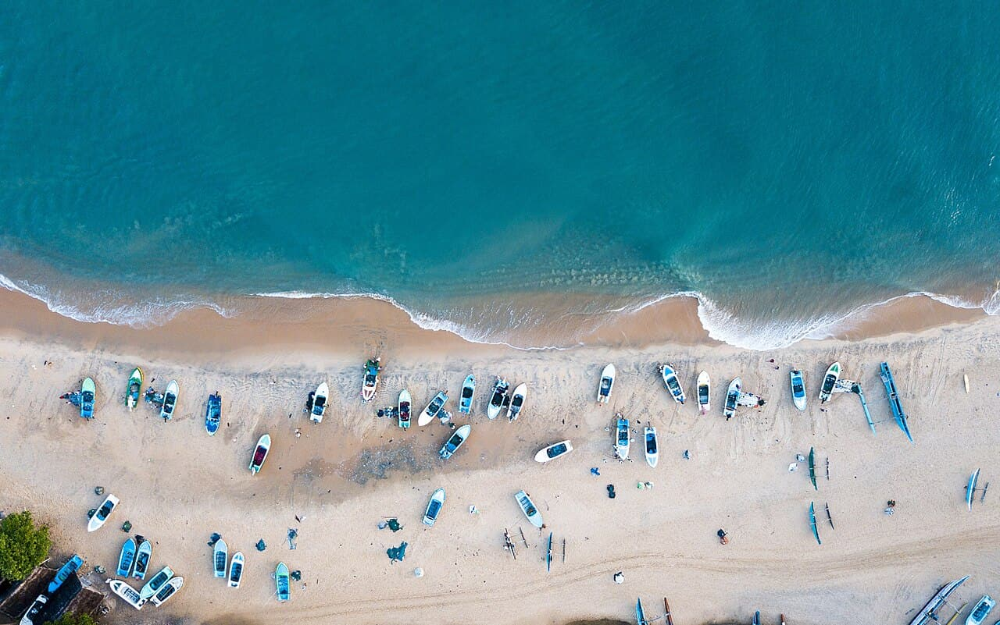

Arugam Bay
Sri Lanka · surf

Le spot phare du Sri Lanka : une droite de pointe qui déroule sur le sable dans une ambiance tropicale décontractée.
- Lieu
- Sri Lanka
- Niveau
- Intermédiaire
- Activités
- surf
- Type d'eau
- Mer / océan
- Coordonnées
- 6.84, 81.84 (position approximative du secteur)
Dangers à connaître
- Courants.
- Soleil intense.
Le conseil d'Ocean Buddy
Belle droite facile à lire ; parfait pour progresser au chaud.
Ouvrir dans Ocean Buddy Télécharger sur l'App Store
Source : Description historique Ocean Buddy · vérification externe en attente.